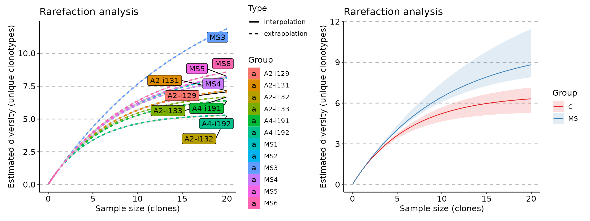
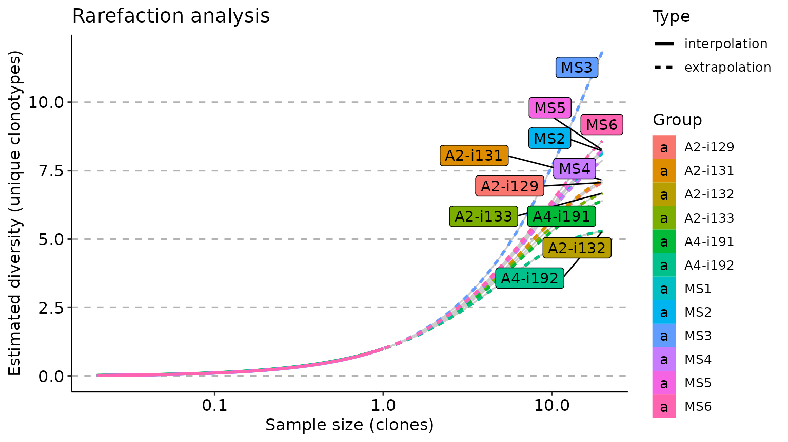

vignettes/web_only/v6_diversity.Rmd
v6_diversity.RmdSevral approaches to the estimation of repertoire diversity are implemented in the repDiversity function. The .method parameter similarly to abovementionned functions sets the means for diversity estimation. You can choose one of the following methods:
chao1 - Chao1 estimator is a nonparameteric asymptotic estimator of species richness (number of species in a population).
hill - Hill numbers are a mathematically unified family of diversity indices (differing only by an exponent q).
div - True diversity, or the effective number of types, refers to the number of equally-abundant types needed for the average proportional abundance of the types to equal that observed in the dataset of interest where all types may not be equally abundant.
gini.simp - The Gini-Simpson index is the probability of interspecific encounter, i.e., probability that two entities represent different types.
inv.simp - Inverse Simpson index is the effective number of types that is obtained when the weighted arithmetic mean is used to quantify average proportional abundance of types in the dataset of interest.
gini - The Gini coefficient measures the inequality among values of a frequency distribution (for example levels of income). A Gini coefficient of zero expresses perfect equality, where all values are the same (for example, where everyone has the same income). A Gini coefficient of one (or 100 percents ) expresses maximal inequality among values (for example where only one person has all the income).
raref - Rarefaction is a technique to assess species richness from the results of sampling through extrapolation.
The .col parameter regulates what sequences and gene segments to choose. For example, if you want to estimate diversity on the nucleotide level, you need to supply .col = "nt", on the amino acid level - .col = "aa". If you want to estimate diversity of amino acid CDR3 sequences coupled with V gene segments, you need to provide .col = "aa+v". By default .col = "aa".
# Compute statistics and visualise them
# Chao1 diversity measure
div_chao <- repDiversity(immdata$data, "chao1")
# Hill numbers
div_hill <- repDiversity(immdata$data, "hill")
# D50
div_d50 <- repDiversity(immdata$data, "d50")
# Ecological diversity measure
div_div <- repDiversity(immdata$data, "div")
p1 <- vis(div_chao)
p2 <- vis(div_chao, .by = c("Status", "Sex"), .meta = immdata$meta)
p3 <- vis(div_hill, .by = c("Status", "Sex"), .meta = immdata$meta)
p4 <- vis(div_d50)
p5 <- vis(div_d50, .by = "Status", .meta = immdata$meta)
p6 <- vis(div_div)
p1 + p2
p3 + p6
p4 + p4
imm_raref <- repDiversity(immdata$data, "raref", .verbose = F)
p1 <- vis(imm_raref)
p2 <- vis(imm_raref, .by = "Status", .meta = immdata$meta)
p1 + p2
repDiversity(immdata$data, "raref", .verbose = F) %>% vis(.log = TRUE)